주소 → 3D, 목표는?
공공데이터를 절차적으로
외곽선 → 입면 → 매스
사진을 붙인다
사진을 읽는다
모델이 짓는다
산출물 지도
v0.2 — 이미지 생성으로 벽면을 칠한다
v0.3 — LLM 이 치수를 읽고 코드가 짓는다
v0.4 — 모델이 건축 스크립트를 쓴다
결측 · 교차검증 · 폴백
대장 높이 vs 층수 × 표준층고
구조화 출력(JSON Schema) · 촬영 전략
갭 재요청 루프 · 생성 코드 안전장치
SegFormer(Cityscapes)로 가림 제거
gpt-image-2 텍스처 · VLM 판독과 심사
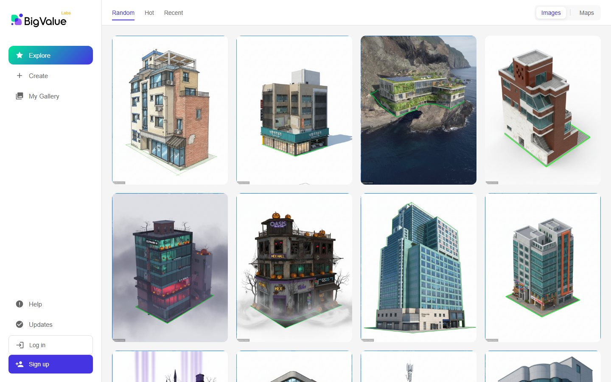
검색 → 지도에서 건물 선택 → 대기열 → 갤러리
로그인 · 권한 · 결과 목록
이미지 1장 → 3D 형상 + 재질 (.blend · .glb)
“그럴듯한 그림”이 아니라 치수와 좌표가 맞는 형상
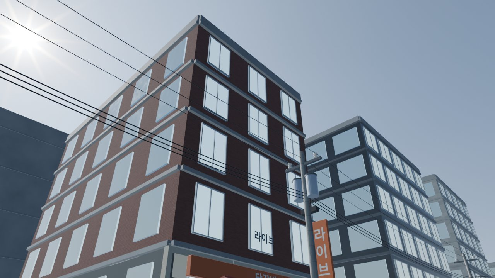
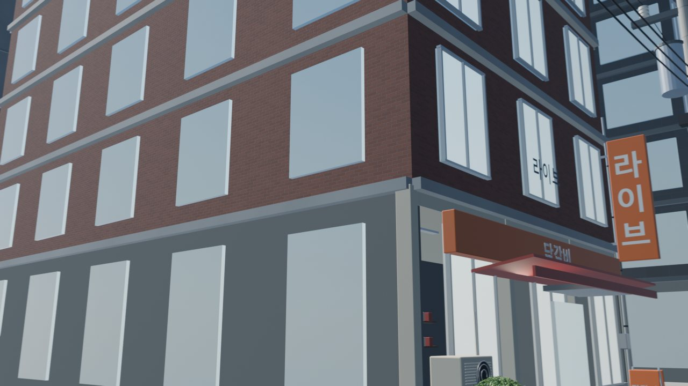
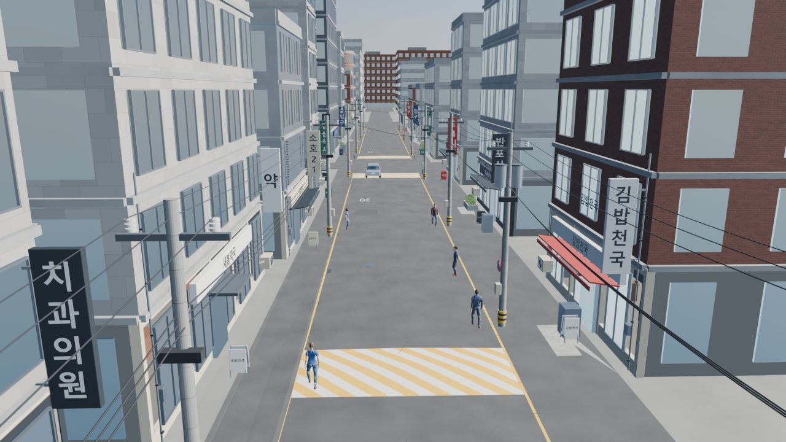
창틀·난간·간판이 실제 두께
절차적 PBR — 해상도 한계 없음
그림자가 형상에서 생긴다
어떤 각도로 돌려도 성립
모든 소스는 막힐 수 있다 → 단계별 폴백
같은 호출은 두 번 하지 않는다 → 재실행 비용 0
runs/<run_id>/<stage>/ → 실패한 곳부터 재개
| 소스 | 쓰임 | 상태 |
|---|---|---|
| VWorld 지오코더 · 검색 | 주소·장소 → 좌표 | 동작 |
| VWorld 위성 타일 (WMTS) | 지붕 정사영상 | 동작 |
| 국가 GIS 건물통합정보 (NED WFS) | 건물 외곽선 · 층수 · 용도 · 높이 | 차단 — 키에 미승인 |
| VWorld 데이터 API 2.0 | 지적도 · 용도지역 · 실폭도로 | 차단 |
| 도로명주소 검색 | 건물명 · 도로명 · 건물관리번호 | 동작 |
| 도로명주소 좌표제공 | 건물 출입구 좌표 | 승인 대기 |
| 건축HUB 건축물대장 | 층수 · 연면적 교차검증 | 선택 |
| OpenStreetMap Overpass | 외곽선 폴백 | 동작 (결측 많음) |
| 카카오 로드뷰 (JS SDK) | 입면 실사 | 동작 · 내부 연구용 |
# 같은 VWorld 키 — 서비스별로 전부 호출 지오코딩 OK 검색 OK WMTS 위성타일 OK (256×256×3 수신) 데이터 API 2.0 INCORRECT_KEY ← 24개 레이어 전부 NED WFS INCORRECT_KEY # domain 파라미터 7가지로 교차 확인 http://localhost INCORRECT_KEY https://labs.ai… INCORRECT_KEY (파라미터 생략) INCORRECT_KEY
“호출 제한에 걸렸다”
키에 그 서비스가 승인되지 않았다. 도메인 문제도 아니다.
코드가 아니라 신청서 — 승인되면 코드 수정 없이 켜지게 배선
① 주소검색 addrLinkApi.do 승인됨 → admCd · rnMgtSn · udrtYn buldMnnm · buldSlno bdMgtSn # 건물관리번호 ② 좌표제공 addrCoordApi.do 승인 대기 → entX · entY # EPSG:5179 = 건물 출입구 좌표
좌표제공은 주소 문자열이 아니라 ①이 준 코드 조합을 받는다
정면 입면 확정 · 정면부터 촬영 · 1층 문 실좌표
도로명주소 월 단위 — GIS 속성보다 최신
| 건물 | 중심에서 | 위치 |
|---|---|---|
| 건물 A | 17.9 m | 외곽선 밖 |
| 테헤란로 534 | 0.5 m | 건물 내부 |
| 테헤란로8길 21 | 1.8 m | 건물 내부 |
→ 3건 중 2건이 중심점. 출입구가 아니다
| 건물 | 결과 |
|---|---|
| 건물 A | 맞음 |
| 테헤란로 534 | 반대편 번지 지오코딩 불가 |
| 테헤란로8길 21 | 틀림 |
→ 이웃 번지가 70~151m 떨어져 방향이 흔들린다. 3건 중 1건
// s02_target/output.json (발췌) { "name": "아이파크타워", "building_id": "2004205337044457153800000000", "pnu": "1168010500101600000", "floors_above": 15, "floors_below": 4, "height_m": 94.13, "use_code": "14000", // 업무시설 "approval_date": "2004-11-25", "footprint_area_m2": 1284.0, "contains_point": true }
서울 강남구 영동대로 520
→ 지오코딩 127.0612, 37.5136
좌표를 품은 건물 후보 → 지도에서 클릭
15층에 94.13m — 층고 6.3m
| 순위 | 소스 | 값 |
|---|---|---|
| 1 | 건축물대장 | 94.13 m |
| 2 | GIS 건물정보 | 94.13 m |
| 3 | 층수 × 표준층고 | 57.7 m |
1·2가 같다 — 그런데 15층에 94m 는 층고 6.3m 다.
반경 150m 이웃 건물 26동 · 정사영상 0.25m/px
도로명주소 · 건물관리번호 · 대장 층별개요
두 값이 같다고 맞는 게 아니다 — 같은 원본에서 왔을 수 있다. 이 의심은 5부에서 실제 오류로 드러난다.
주소 → 좌표 → 외곽선 · 이웃 건물 → 국소 좌표계
키 없으면 OpenStreetMap — 파이프라인의 폴백 그대로
산출물 footprint.json
건축물대장 · 도로명주소 → 높이 우선순위 규칙
15층 94m 를 직접 검산한다
산출물 prior.json
| 입면 | 폭 | 성격 |
|---|---|---|
| f_0 | 69.9 m | 길에 면함 |
| f_1 | 10.6 m | 길에 면함 |
| f_2 | 5.1 m | 맞벽 |
| f_3 | 0.5 m | 맞벽 · 좁음 |
| f_4 | 6.4 m | 맞벽 |
| f_5 | 2.1 m | 맞벽 · 좁음 |
| f_6 | 10.3 m | 길에 면함 |
| f_7 | 46.8 m | 길에 면함 |
| f_8 | 4.4 m | 기타 |
| f_9 | 2.0 m | 기타 · 좁음 |
| f_10 | 16.3 m | 길에 면함 |
길에 면한 입면 5개 — 맞벽은 찍을 수 없으니 촬영에서 뺀다.
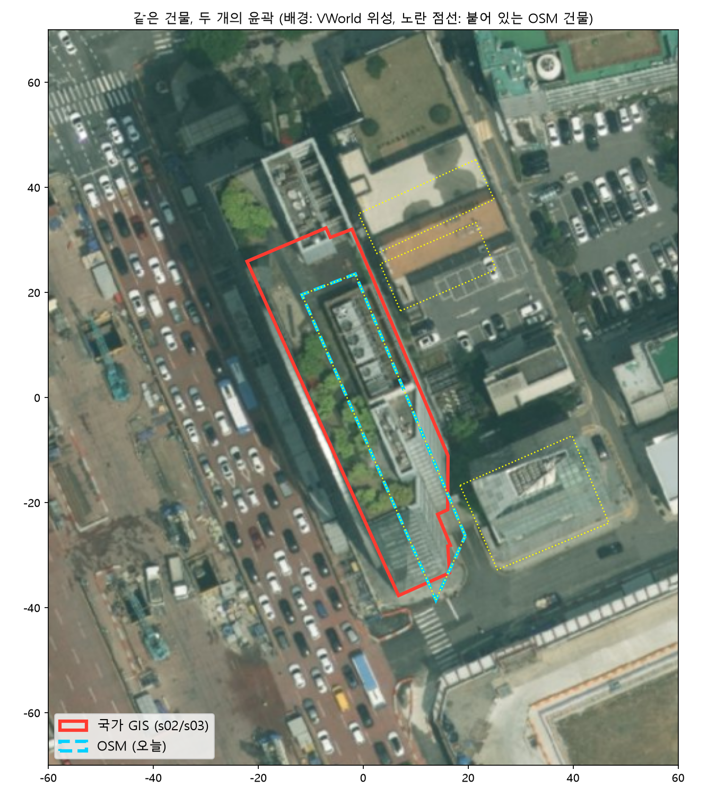
OSM 폴리곤 612.6㎡ · 높이 94m — 그림의 하늘색 점선
= OSM 에 절반만 그려진 아이파크타워 자신
겹침 ÷ 대상 면적
= 44.8% < 50% → 남김
겹침 ÷ 이웃 면적
= 93.9% → 같은 건물
자기 자신이 이웃이 됐다 → 닿은 4개 면이 맞벽 → 촬영에서 빠졌다
위성영상: VWorld · 그림: 실습 W04_1 실행 결과
각도라 위도마다 1° 의 길이가 다르다
→ 거리·면적 계산이 번거롭다
건물 중심 횡메르카토르
+X 동 · +Y 북 · m — 벡터 계산이 단순해진다
원점 경위도 · 정북 · 지반고를 파일에 기록
→ 3D 지도·거리 씬에 그대로 얹힌다
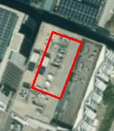
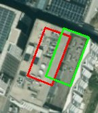
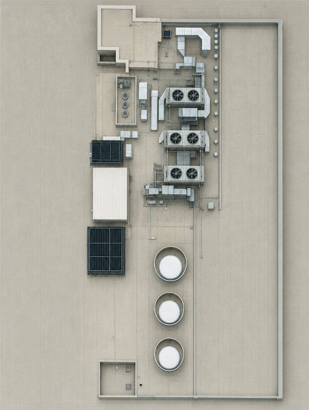
외곽선 다각형을 옥상 에지에 가장 잘 맞게 평행이동 탐색 → 그만큼 되돌려 잘라낸다. 위성영상: VWorld
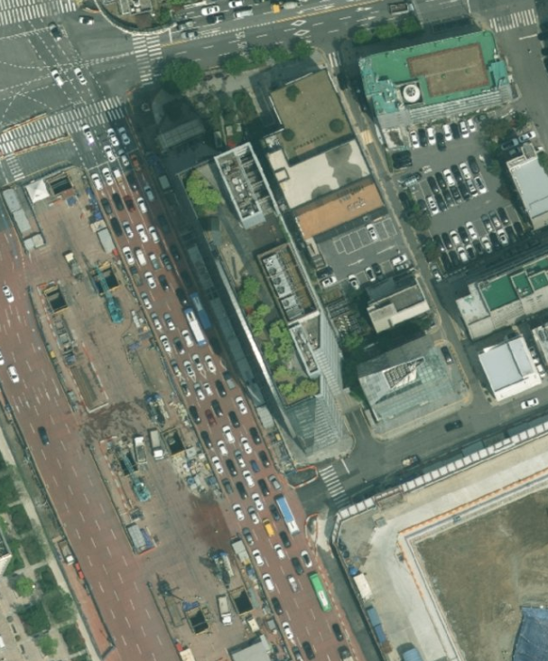
옥상 판독 (5부) · 실물 대조 (6부)
계단실 · 물탱크 · 실외기 묶음 · 덕트 · 태양광 · 녹지
위치는 외접 사각형 기준 0~1 비율
위에서는 모른다 — 그림자로 추정될 때만 받고, 아니면 종류별 표준값
위성영상: VWorld
외곽선 단순화 → 입면 표(폭·향·맞벽) → 높이만큼 올리기
노트북 안에서 3D 로 돌려 본다
산출물 facades.json · lod1.glb
타일 이어 붙이기 → 외곽선으로 자르기 → 기복변위 보정
산출물 roof_crop.png · roof_items.json
# 직접 측정해서 고정한 관계 vfov = 60 − 10 × zoom # zoom −3 … 3 pan = 진북 기준 시계방향 (°) tilt = + 가 아래쪽 # 입면 구간 → 카메라 역산 (LLM 아님) shot = frame_shot(pano_xyz, facade, "ground") → pan, tilt, zoom
로드뷰는 이미지 API 가 없다 — 웹 지도에 큐브맵으로 그려질 뿐
화각 ↔ 줌 관계를 재서 식으로 고정 → 원하는 구간을 정확히 겨눈다
수집 결과는 내부 연구용 — 오늘 실사는 보여 주지 않는다. 지도 서비스 약관을 반드시 확인할 것.
앞에 선 다른 건물도 ‘building’ 이다 → 깊이로 한 번 더 거른다
정면도·해상도 순으로 덮고, 정합 후 차이 큰 영역은 기각 — 남의 건물 혼입 방지
{ "floors": 5, "bays": 3,
"wall_material":
"brick_red",
"window": {"w":1.6,"h":1.8},
"ground_floor":
"storefront" }JSON 스키마 강제 · 없는 값은 비운다
판독 구조를 가이드로
빈 곳까지 채운 입면 후보
입면당 2~4안
VLM 심사(레이아웃·재질·동일 건물)
+ 색차 ΔE + 창 배치 일치도
실제 결과: 레이아웃 5/10 · 재질 8/10 · ΔE 18.2 → 불합격
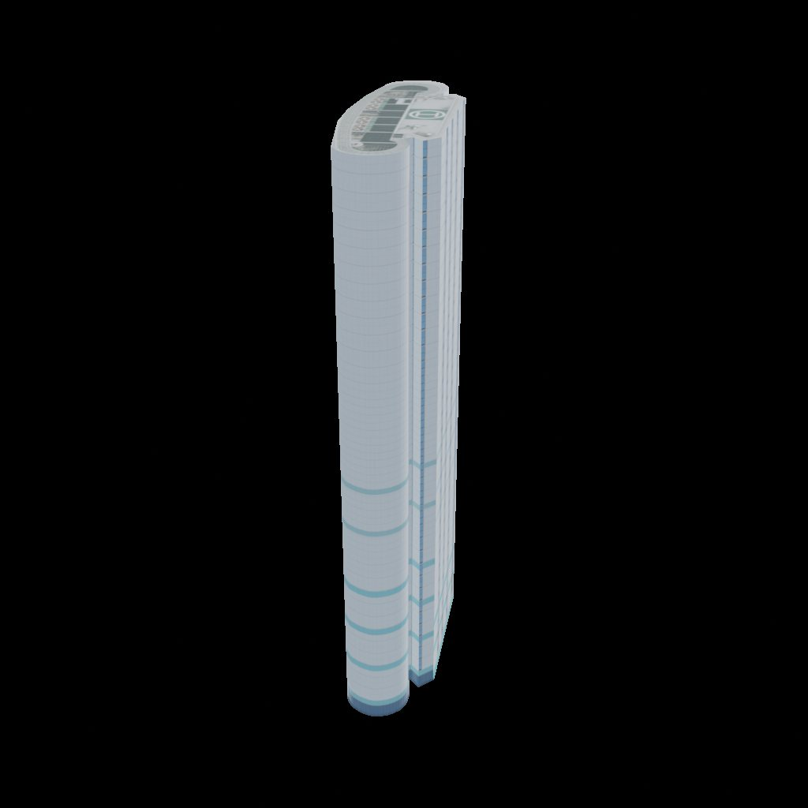
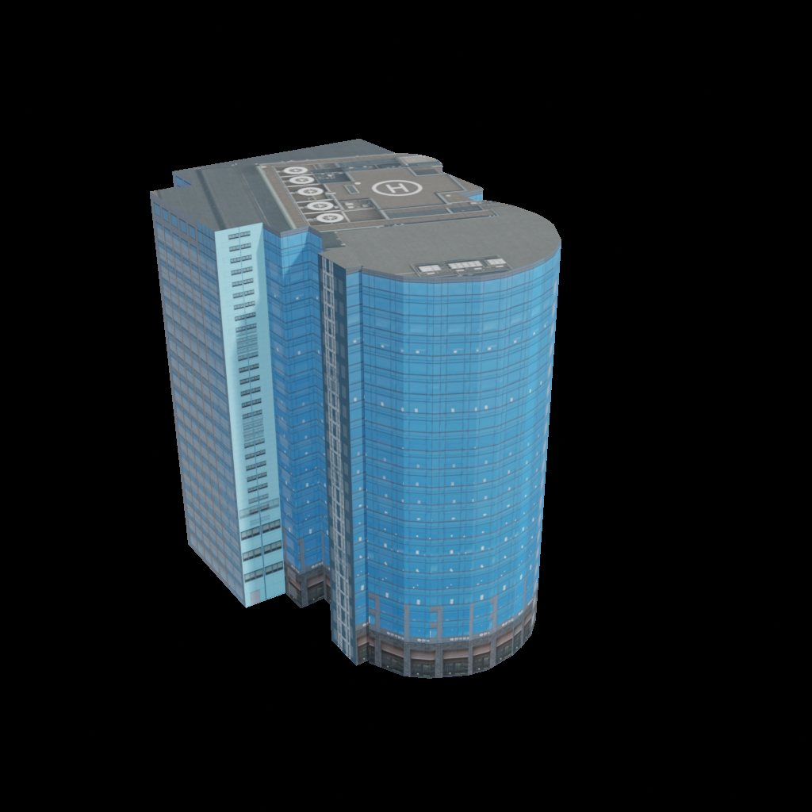
각도를 바꾸면 창이 평면인 게 드러난다
촬영 당시 그림자가 텍스처에 구워져 있다
가려진 면을 생성으로 메운다 — 매번 다르다
면·해상도·후보 수를 늘릴수록 호출이 는다
사진을 붙인다
사진을 읽어 치수로 옮긴다
| 무엇 | 어디서 오는가 |
|---|---|
| 건물 평면 윤곽 | 국가 GIS 건물 외곽선 (폴백: OSM) |
| 건물 높이 · 층수 | GIS 속성 · 건축물대장 |
| 층고 · 창 크기 · 베이 · 간판 · 설비 | 로드뷰 사진 → LLM 이 “비율”로 판독 → 알려진 치수를 곱함 |
| 옥상 설비 위치 | 위성 정사영상 → LLM 판독 |
| 실제 폴리곤 생성 | Blender bmesh 결정론적 코드 (LLM 아님) |
무엇을 몇 컷 찍을까
입력 텍스트만 · 1회 · 8~9초
사진에 뭐가 보이나
사진 ≤5장 · 입면당 1회 · 11~14초
정사영상 1장
1회 · 9~12초
렌더가 사진과 맞나
입면당 ≤2라운드 · 4~8초
OpenAI().responses.create( model="gpt-5.5", input=[...사진 + 알려진 치수...], text={"format": {"type": "json_schema", "schema": SCHEMA, "strict": True}})
스키마에 없는 필드는 생성될 수 없다.
실패하면 None → 규칙 기반 기본값으로 계속. LLM 이 죽어도 파이프라인은 죽지 않는다.
v0.2 — 가능한 시점 전부
v0.3 — 예산 24컷 안에서
full 입면 전체 · 층 경계와 비례
ground 1층 · 점포·출입구·간판
upper 상부 · 창 그리드·처마선
corner 사선 · 두 입면을 묶는다
LLM 은 무엇을 찍을지만 정한다.
카메라 각도는 기하가 역산한다.
길에서 안 보이는 면은 0컷 · 가장 중요한 면에 full 최소 1컷 · 고층은 upper, 저층 상가는 ground · 예산을 넘지 말 것
| 입면 | 중요도 | 컷 | 프레이밍 | 모델이 쓴 이유 (발췌) |
|---|---|---|---|---|
| f_0 | 10 | 7 | full · full · ground · ground · upper · upper · corner | Widest visible facade at 69.9 m and likely the primary street elevation. N… |
| f_7 | 9 | 6 | full · full · ground · ground · upper · corner | Second-largest visible facade at 46.8 m with the most street-view position… |
| f_10 | 7 | 4 | full · ground · upper · corner | Substantial visible NW facade, 16.3 m wide, with many available panoramas.… |
| f_1 | 5 | 3 | full · ground · corner | Narrow but visible SE facade at 10.6 m. A full shot captures proportions a… |
| f_6 | 5 | 3 | full · ground · upper | Visible E-facing return facade, 10.3 m wide. Needs a full elevation view, … |
실제 촬영 컷
전체 · 1층
상부 · 사선
f_2~f_5 — 실은 오류(앞 3부)
# 묻지 않는다 "창 폭이 몇 미터인가?" # 묻는다 w_frac_of_bay # 창폭 ÷ 베이폭 h_frac_of_floor # 창높이 ÷ 층고 floor_line_fracs # 층 경계 높이 비율 x0_norm, x1_norm # 입면 좌(0) → 우(1)
# 곱한다 — 공개데이터로 이미 안다 bay_w = facade.width_m / bay_count # GIS 외곽선 win.w_m = w_frac_of_bay * bay_w win.h_m = h_frac_of_floor * floor_h # 대장 sign.z_m = z_frac * height_m
{ "height_m": 18.4, "floors": 5,
"floor_heights_m": [4.2, 3.6, 3.6, 3.6, 3.4],
"facades": [{ "side": "front", "bays": 3,
"window": {"w":1.6, "h":1.9, "reveal_m":0.12},
"floor_patterns": [{"floor":1, "kind":"storefront"}],
"signs": [{"text":"…", "proj_m":0.25}],
"evidence": [{"shot":"v_004", "conf":0.86}] }],
"roof": {"parapet_m":1.1, "items":["hvac"]},
"need_shots": [{"side":"rear", "why":"미관측"}] }
pydantic 으로 타입·범위 검증
모르는 값은 null — 추측 금지
각 값이 어느 컷에서 왔는지
need_shots — 부족분을 스스로 요청
“Modern 15-storey office tower with contrasting faces: one highly reflective dark blue-green curtain-wall side carrying a large circular clock/graphic feature, and other sides made of a pale silver-white metal-panel frame with regular blue glass office windows.”
| 입면 | 신뢰도 | 베이 | 창 (판독 → 미터) | 1층 | 메모 |
|---|---|---|---|---|---|
| f_0 | 0.68 | 12 | 5.4 × 5.5 m | lobby | 간판 3 · 설비 3 |
| f_7 | 0.72 | 8 | 5.0 × 4.5 m | parking | 간판 2 · 설비 4 |
| f_10 | 0.62 | 6 | 2.5 × 5.7 m | lobby | 추가 촬영 요청 — ground (가로수에 가림) |
| f_1 | 0.78 | 3 | 3.2 × 5.2 m | office | 간판 3 |
형상이 맞다
층고 ×0.75~1.35 · 창 ×0.5~2.0 범위 안에서만
사진에 우리 건물이 안 찍힌 것
// 렌더 vs 실사 — 같은 카메라 { "match_score": 0.63, "verdict": "minor", "corrections": [{ "field": "window_h", "current_is": "too_small", "should_be_ratio": 1.2 }] }
v0.2 는 “그럴듯한가” — 주관.
v0.3 은 “맞는가” — 답이 숫자로 나오고 고칠 대상이 명확하다.
정합 검증 1회차: 평균 일치도 0.30 (f_0 0.45, f_7 0.18, f_10 0.25, f_1 0.35, f_6 0.28)
f_7: 일치도 0.18 < 0.35 → 대상 건물이 아닌 장면으로 판단, 판독 폐기하고 기본값 사용
f_10: 일치도 0.25 < 0.35 → 대상 건물이 아닌 장면으로 판단, 판독 폐기하고 기본값 사용
f_6: 일치도 0.28 < 0.35 → 대상 건물이 아닌 장면으로 판단, 판독 폐기하고 기본값 사용
f_0: 층고 ×0.75 — The render's horizontal floor bands are spaced farther apart than the
f_1: 층고 ×0.75 — The render has very tall floor modules, especially the lower levels, w
정합 검증 2회차: 평균 일치도 0.37 (f_0 0.45, f_7 0.25, f_10 0.35, f_1 0.55, f_6 0.25)
f_0: 층고 ×1.25 — The render has too many closely spaced horizontal floor lines in the s
f_10: 층고 ×0.75 — The render uses very tall repeated floors, producing a much taller/sli
최종 평균 일치도 (2회차)
층고 합(53.2m)이 건물 높이(94.1m)와 크게 달라 균등 분할로 대체
‘15층에 94m’ — 같은 원본에서 온 두 값이 골격을 고정했다
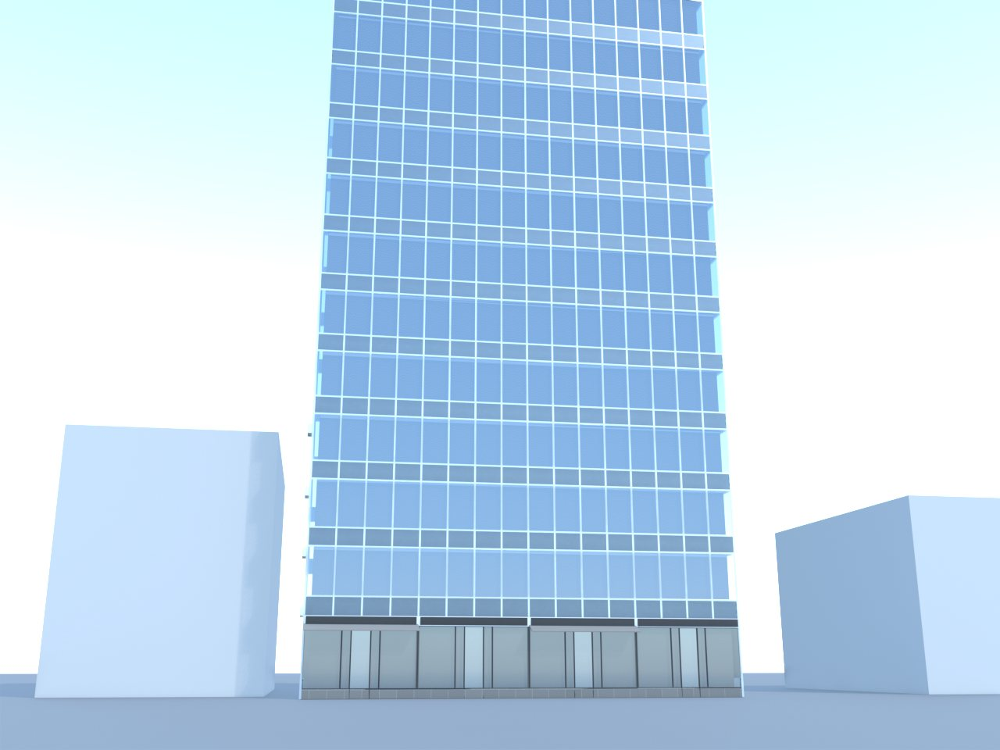
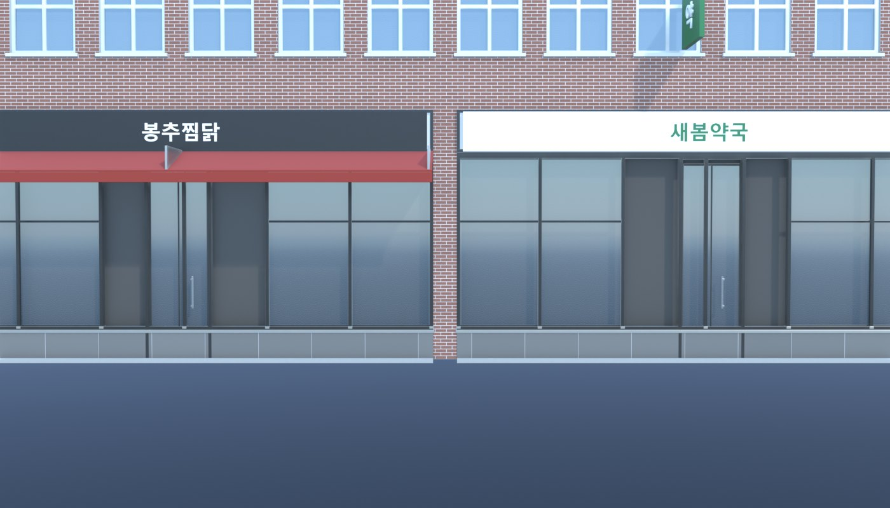
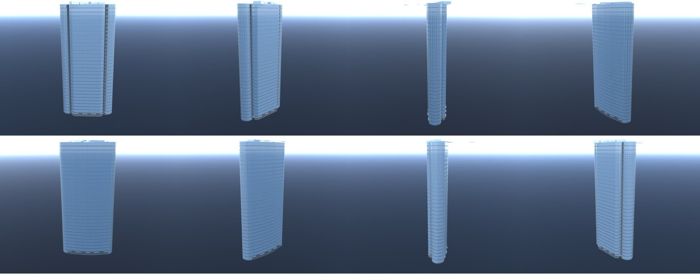
건물 1동 부재 수
면 (레퍼런스 건물만 141,700)
텍스처 이미지 생성
건물 1동 (v0.2 15~94분)
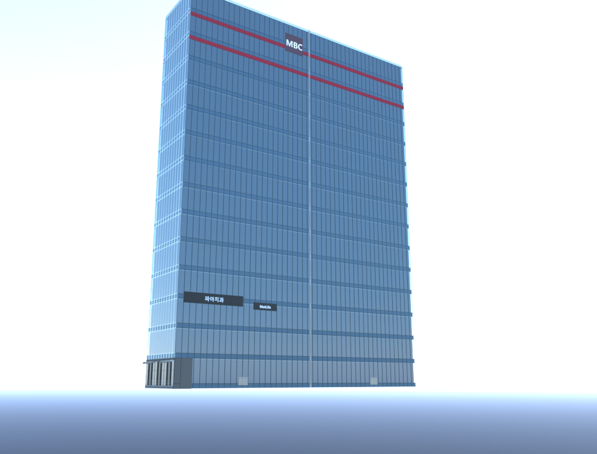
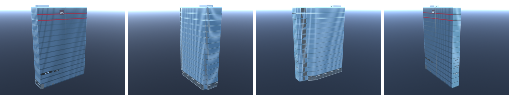
커튼월 · 은백색 금속 패널 · 층 띠 · 옥상 설비 — 판독대로
원형 그래픽 — BDS 스키마에 원을 담을 칸이 없다
층은 대장대로 15개 × 6.3m
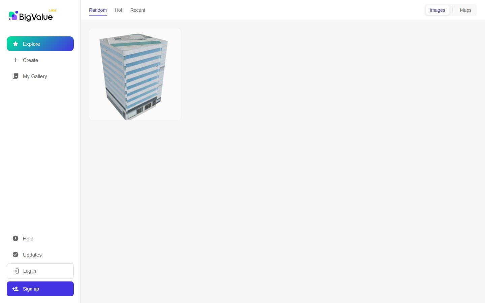
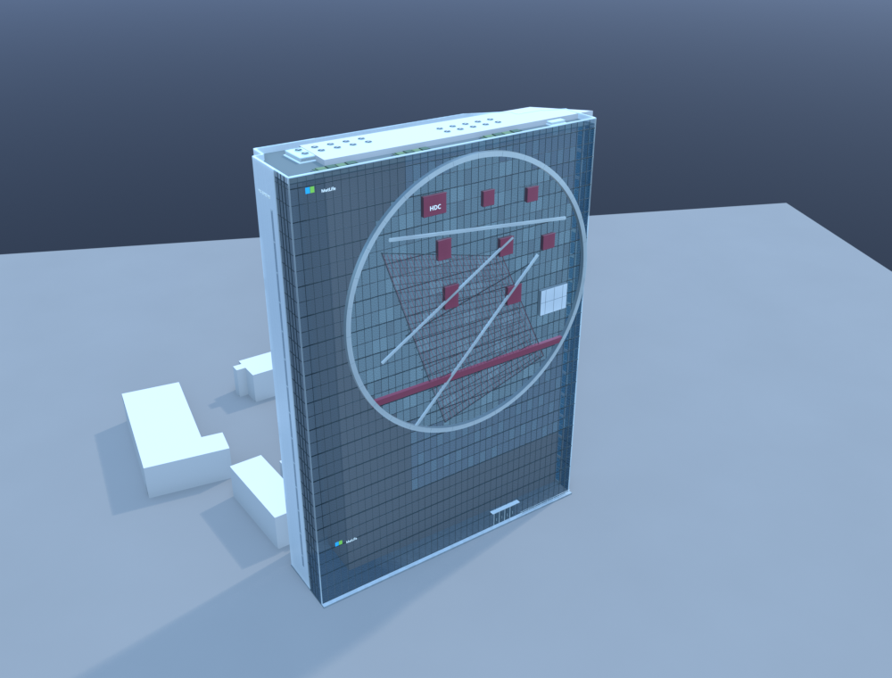
FastAPI · SQLite · 워커 큐 1개 · 단계별 진행률
절차적(빠름) 38초 · 절차적+실측 6분 · astra 6~7분
외부엔 최종 3D 만 — 로드뷰·중간 결과는 내부에서만
산출물 bds.json · building.glb
아이파크타워의 실제 판독 결과로 이어 간다 — 같은 JSON 이면 같은 메시
BDS 에 없는 형태는 표현 자체가 불가능
→ 아이파크타워의 원형 그래픽
대장 수치와 사진이 다르면 수치 쪽이 골격이 된다
→ 아이파크타워의 층고 6.3m
롯데백화점 강남점 — 1986년 준공 + 판매시설이 용도코드 기본값에서 근생과 같은 칸 → 벽돌 근생으로 지어졌다
대지 형상 — 외곽선 좌표
좌표계 — LOCAL_ENU · +X 동 · +Y 북 · m
높이 · 층수 — 참고용. “사진이 다르면 사진을 믿어라”
정사영상 1장 + 로드뷰 8장 (면을 고루)
층별개요
용도코드 기본값
BDS 스키마
색 · 질감 · 형상 · 창의 유무는 전부 모델이 사진에서 정한다
# 쓸 수 있는 것은 이 7개 함수뿐 — import 없음 mat(name, color, kind, unit, accent) # 재질 box(x, y, z, w, d, h, m, rot) # 상자 prism(points, z0, z1, m) # 다각형 기둥 cyl(x, y, z, r, h, m) # 원통 quad(p0, p1, p2, p3, m) # 면 하나 text(s, x, y, z, size, m) # 간판 글자 group(name) # 부재 묶음
같은 스크립트 → 같은 결과
사람이 열어 숫자를 고칠 수 있다 — 블랙박스가 아니다
prism 과 for 문에서 나온다 — 원시 bpy 는 보이지 않는다
도구 목록을 정해 주고 그 안에서만 움직이게 한다
mat("midnight_glass", "#253e4a", kind="glass", roughness=0.19, metallic=0.42)
mat("blue_glass", "#416779", kind="glass", roughness=0.17, metallic=0.38)
mat("blue_glass_light", "#537c89", kind="glass", roughness=0.18, metallic=0.35
mat("circle_glass", "#729699", kind="glass", roughness=0.18, metallic=0.4)
mat("circle_glass_light", "#84a7a8", kind="glass", roughness=0.2, metallic=0.3
mat("circle_glass_dark", "#628489", kind="glass", roughness=0.17, metallic=0.4
mat("rear_glass", "#44798e", kind="glass", roughness=0.16, metallic=0.3)
mat("rear_spandrel", "#67868e", kind="glass", roughness=0.25, metallic=0.32)
mat("entrance_glass", "#679397", kind="storefront_glass", roughness=0.16)
mat("dark_frame", "#293b41", kind="frame", roughness=0.32, metallic=0.65)
mat("aluminium", "#b8c4c6", kind="metal", roughness=0.3, metallic=0.72)
mat("silver_cladding", "#d3dadb", kind="metal_panel", unit=[1.25, 1.05], accen
mat("silver_band", "#c5d0d1", kind="metal_panel", unit=[1.4, 0.65], accent="#a
mat("ring_face", "#bbc5c5", kind="metal_panel", unit=[1.1, 1.0], accent="#9ca7
모델이 쓴 행 수
면 · group 25개
높이: 지은 94.2m / 대장 94.1m (차이 +0.1m)
360초 · 로드뷰 8장 + 정사영상 1장
import · while · lambda · 던더 속성 · 허용 밖 호출 → 실행 전 차단
문제를 그대로 돌려주고 다시 받는다 — 실제 1회차 lambda 반려 → 2회차 통과
__builtins__ = {} — 노출은 7개 함수 + 수학 함수뿐
부재 4,000개 · 타임아웃 20분
# check_script() 가 반려하는 것 — 실습 W04_6 에서 직접 확인 __import__('os').system('…') # 허용 밖 호출 ().__class__.__bases__[0] # 던더 속성으로 샌드박스 탈출 while True: box(…) # 무한 루프
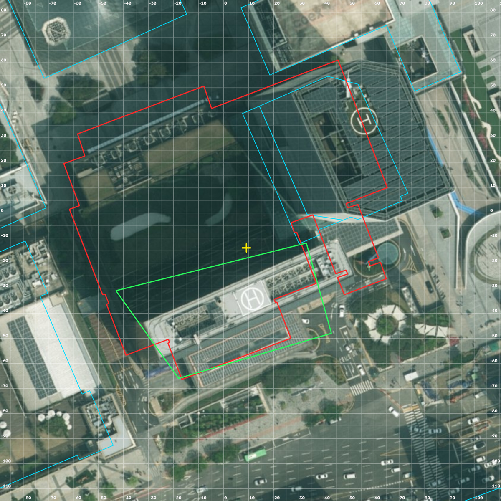
GIS 건축선 10,504㎡ ↔ 대장 건축면적 2,808㎡ — 3.74배
“빨간 선은 대상 옥상이 아니라 남서쪽 낮은 이웃 옥상·헬리패드를 덮고 있다” → 초록 선을 새로 그림
새 건축선이 주소 지점에서 40m → 기각, 원래 선 유지
위성영상: VWorld
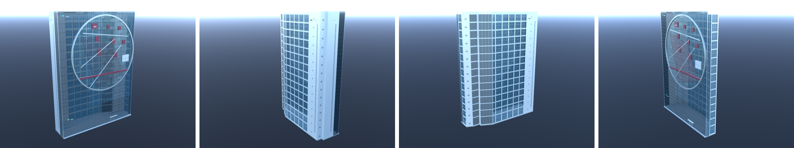
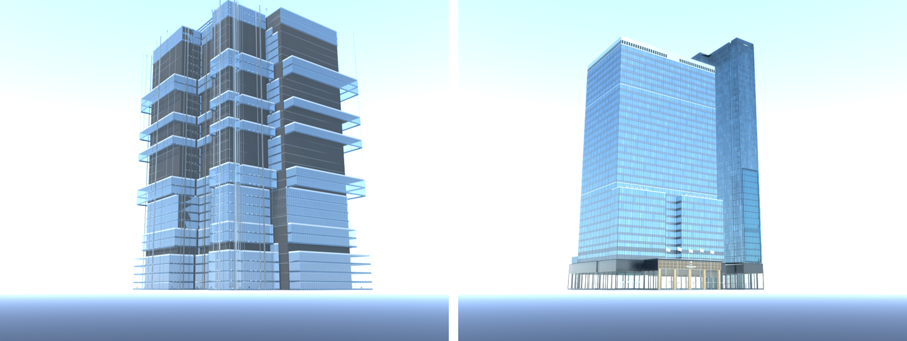
로드뷰 없이 공공데이터만 쓴 빠른 모드 — 부재 3,159개 · 면 35만 개. 층 띠가 들뜬 슬래브처럼 흩어졌다
두 매스가 맞물린 실루엣과 저층부를 세웠다 — 부재 수가 많다고 닮는 게 아니다
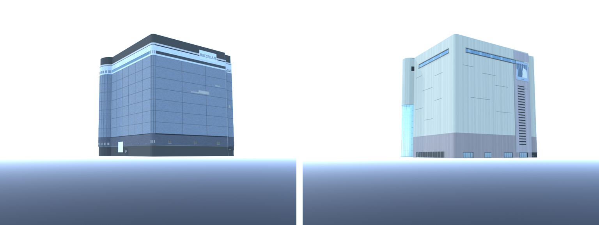
판독은 정확했다 — “창이 거의 없는 대형 백화점 블록”(신뢰도 0.83). 그래도 결과는 패널 격자 상자, 일치도 0.37
창 없는 밝은 패널 벽과 측면의 좁은 유리 띠 — 판독한 그대로가 형태가 됐다
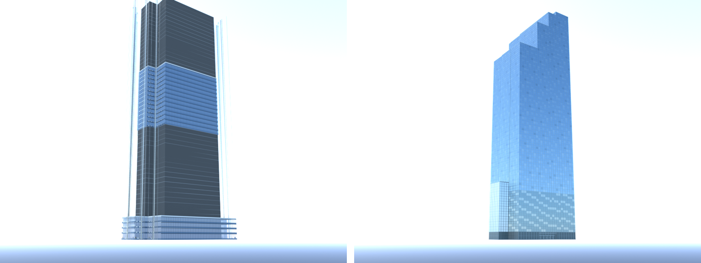
판독 — “연속된 청회색 커튼월의 1980년대 후반 고층”. 결과는 상하로 색 띠를 나눈 상자, 일치도 0.35
상부가 계단처럼 꺾이는 실루엣과 저층부 유리 패턴
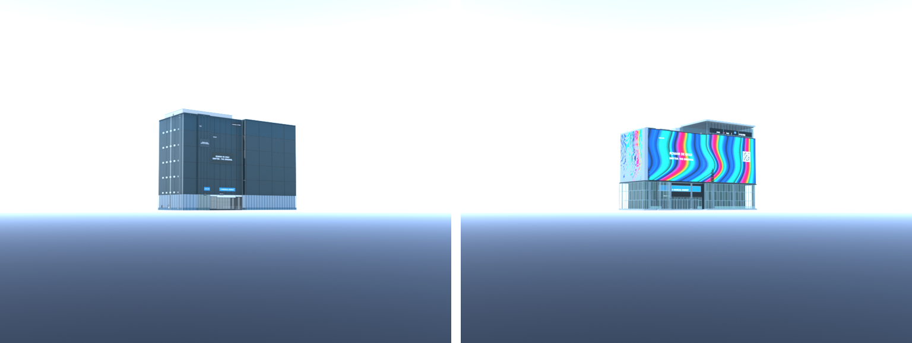
판독 — “코엑스 아티움 공연장 포디움, 낮은 상자”. 결과는 어두운 커튼월 상자, 일치도 0.32
전면 전체를 발광 재질의 큰 화면으로 — 미디어 파사드
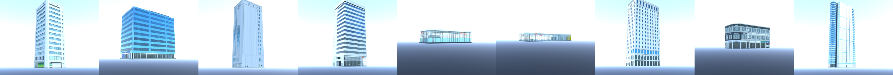
테헤란로 514 ~ 534
1동 · 2회차부터 스크립트 재사용 30초
원점 경위도 · 정북 · 지반고 → 3D 지도에 그대로
| v0.2 사진 텍스처 | v0.3 절차적 + 실측 | v0.4 astra | |
|---|---|---|---|
| 로드뷰 촬영 | 최대 258컷 | ≤ 24컷 (아이파크 22) | ≤ 24컷 → 8장 사용 |
| 이미지 생성 호출 | 면 × 2~4안 | 0회 | 0회 |
| 형상을 정하는 것 | 외곽선 프리즘 + 사진 | BDS 스키마 + 우리 코드 | 모델이 쓴 스크립트 |
| 재현성 | 실행마다 다름 | 같은 BDS → 같은 모델 | 같은 스크립트 → 같은 모델 |
렌더가 푸르고 창백하다 — 모델이 고른 따뜻한 색을 월드 조명이 덮어쓴다
롯데백화점 지은 43.3m / 대장 40.8m — 사진의 파라펫을 더 봤다
로드뷰 차가 안 지나간 골목 — 옵션이 아니라 데이터의 한계
도로명주소 출입구 좌표 · 국가 GIS 건물통합정보 — 승인되면 코드 수정 없이 켜진다
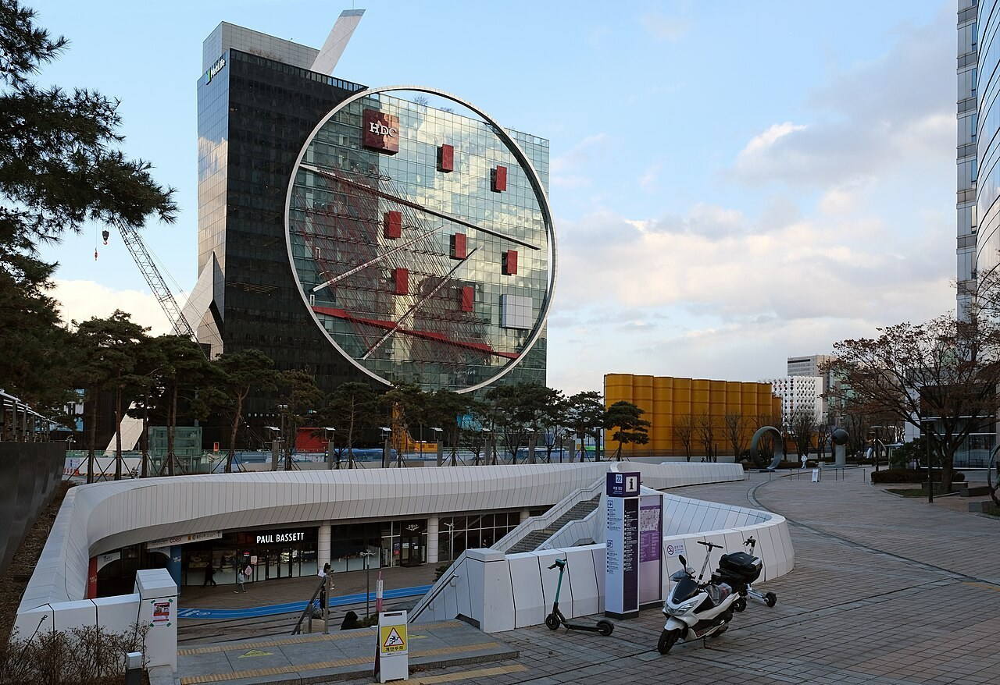
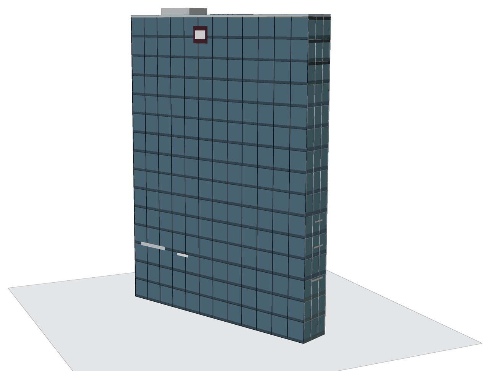
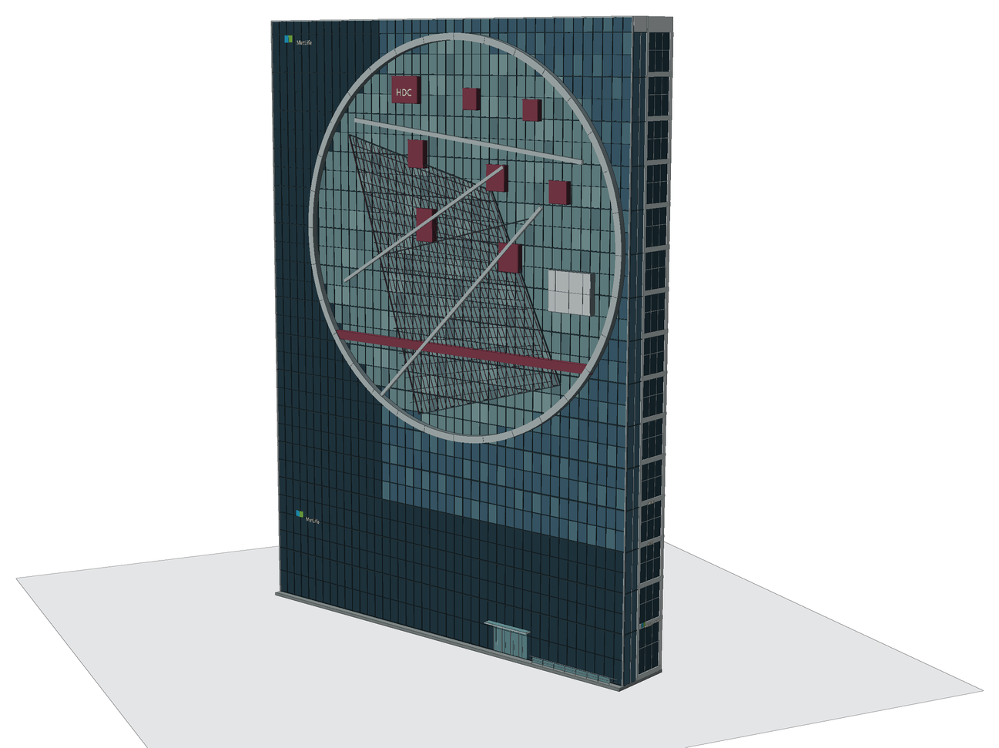
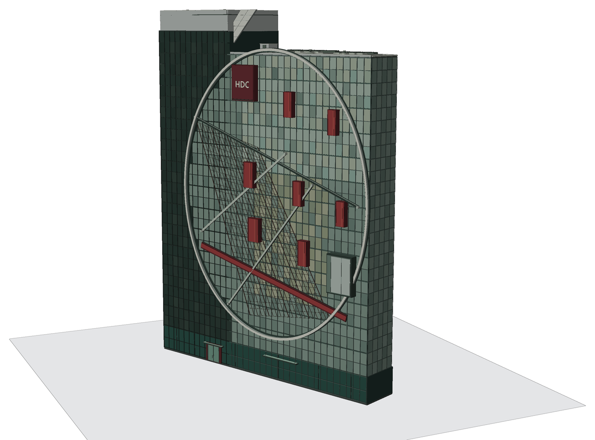
커튼월 판은 맞다 — 원이 없다
488행 · 4,395 부재 ↔ 542행 · 4,369 부재
그래도 둘 다 원, 높이 94.2m · 94.3m
생성은 매번 다르다 — 실행은 항상 같다
사진: Wikimedia Commons “Yeongdong-daero 3.jpg” · kallerna · CC BY-SA 4.0 · 3D: trimesh 로 재구현한 7개 함수
산출물 build.py · building.glb
astra 가 아이파크타워에 쓴 실제 스크립트를 같은 검사·샌드박스로 — 악성 코드 3줄이 걸리는 것도 본다
| 단계 | 하는 일 | 산출물 | 실습 |
|---|---|---|---|
| s00–s02 | 주소 → 좌표 → 건물 하나 | s02_target/output.json | W04_1 |
| s03 | 속성 · 이웃 · 정사영상 · 검산 | s03_prior/output.json · ortho_local.png | W04_2 · W04_4 |
| s04 | LOCAL_ENU · 입면 분할 · LOD1 | s04_geometry/output.json · mesh_lod1.obj | W04_3 |
| s21 | 촬영 전략 → ≤24컷 | s21_survey/plan.json | — (내부 연구용) |
| s22 → s20 | 비율 판독 → BDS → 절차적 3D | bds.json · building.glb | W04_5 |
| s25 → s30 | 실물 대조 → astra 스크립트 → 3D | build.py · building.glb | W04_6 |
스케일과 좌표를 준다 — 외곽선·높이·층수
사진을 정리한다 — 분할·깊이·정면화
판단과 계측 — 무엇을 찍나·비율·실물 대조·스크립트
계산과 검산 — 역산·환산·검증·샌드박스
Q1 “덜 알려 줬더니 더 닮았다” — 대장이 맞고 사진이 틀린 경우는 언제인가? 무엇이 이겨야 하나?
Q2 로드뷰 수집 결과를 왜 공개하지 않을까? 공공데이터와 무엇이 다른가?
Q3 동네 한 블록이 3D 로 있다면 어떤 도시 분석을 하겠는가? (일조·조망·보행·상권…)
클릭하거나 번호를 입력해 이동 · O / Esc 닫기
| →↓PgDnSpace | 다음 슬라이드 |
| ←↑PgUpBackspace | 이전 슬라이드 |
| HomeEnd | 처음 / 마지막 |
| 1 … 9Enter | 번호로 이동 |
| O | 목차 열기 / 닫기 |
| N | 발표자 노트 |
| F | 전체화면 |
| B | 화면 가리기 |
| ?H | 이 도움말 |
| Esc | 닫기 |
스테이지 좌 / 우 클릭, 터치 스와이프로도 넘길 수 있습니다.
현재 위치는 주소창 #12 로 유지되므로 새로 고쳐도 그 자리에서 이어집니다.